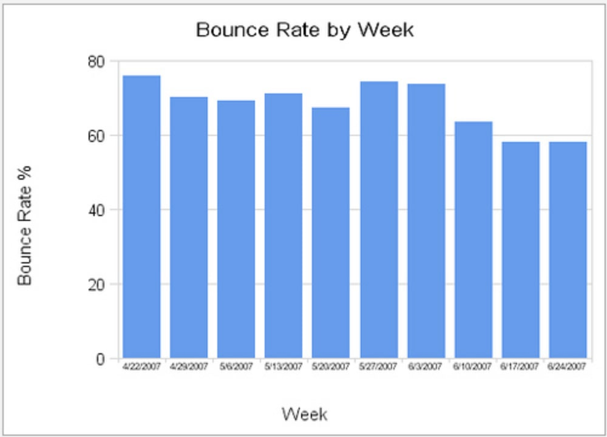
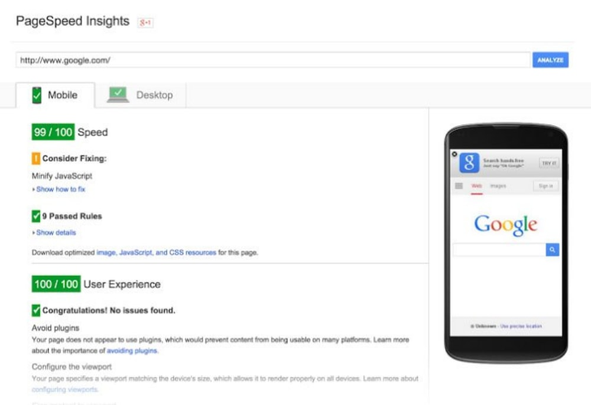
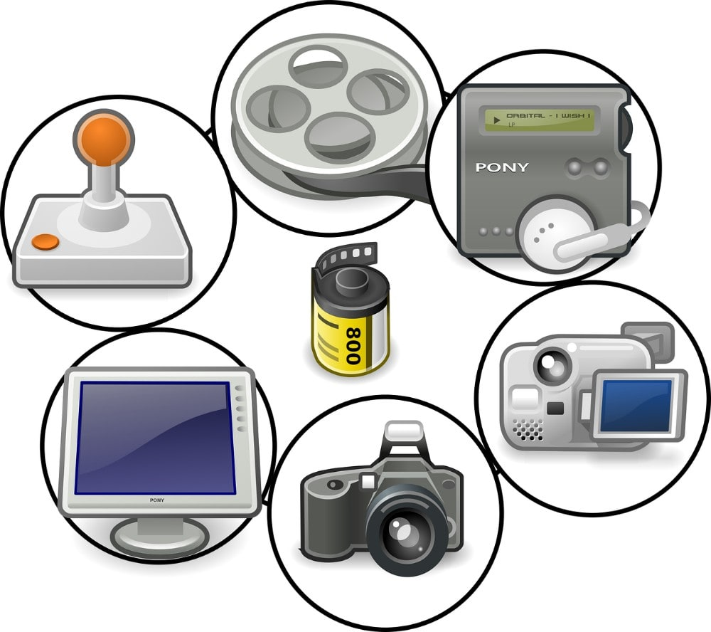
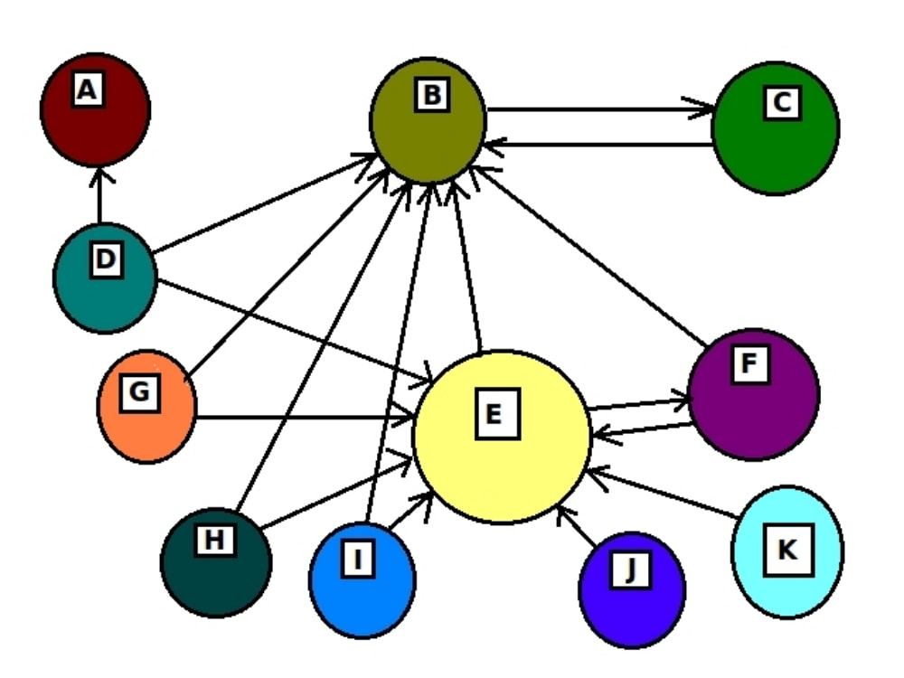
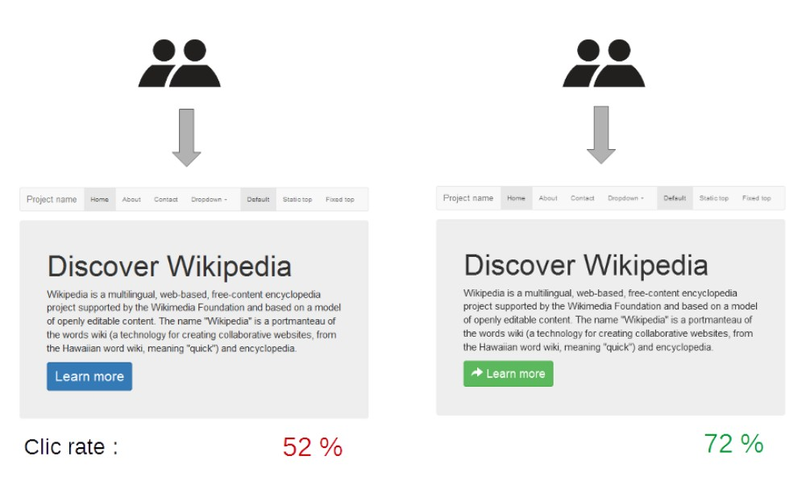

You have heard people talk about Click-Through-Rates.
You have heard people talk about Conversion Rates.
But you will rarely ever hear people mention Bounce Rate .

The bounce rate of your website is one of the most important factors for measuring engagement on your website and the efficiency of your marketing.
Driving traffic to your website isn’t the only job of online marketing. You need to drive high-quality traffic to your website and increase their retention on the landing page. To measure their retention on the landing page, we use bounce rate.
What is bounce rate?
The Bounce rate is the percentage of the ratio of people who leave the landing page to the people who stay on the landing page, all in a specified amount of time. So for example, if the majority of your traffic views a webpage of yours and then immediately exits, that indicates a high bounce rate.
A low bounce rate is considered a good bounce rate. Why? Becuase it means that there is a lower percentage of people ‘bouncing’ of your page. Hence, a bounce rate below 40% is a good bounce rate. As the number suggests, it could mean either that people are enjoying the content hence staying for a longer duration or that more people are exploring different areas of the website.
A high bounce rate is then, of course, something very bad. It should be avoided at all costs and the landing page should be optimized as soon as possible. A high bounce rate would usually indicate misleading content, dull content, content without any media etc. A bounce rate above 60%, especially for content sites, is a bad bounce rate and measures should be taken to change it.
These percentages may be different for your site and niche.
In reality, there may exist different reasons that make your web pages’ bounce rate increase.
To spot the culprit, you’ll need to unleash your inner Sherlock Holmes. Then open your analytics platform of choice, be it HubSpot or Google Analytics, and figure out exactly why people are bouncing too much.
Below are some measures you can take to improve your websites or landing pages bounce rate.
Enhance Your Page Load Time .

Take a Google’s Page Speed test. See if there exist problems with the load time.
Are you thinking ” so what if I have a slow page-load speed? ”
Well, these days Google really prioritizes sites with a good user experience. Of course, if you have a low page load speed, you will have a higher bounce rate. And in terms of mobile, your website NEEDS to have an optimized speed otherwise you will not only get a higher bounce rate, but also a big dip in the SERPS of Google.
With that in mind, the design and layout of your website should have a rather simplistic user interface. Information should be easy to find without spending hours in searching on the website.
SearchEngineJournal.com has a guide on some WordPress plugins that decrease page load time.
Do you have pop-up ads and auto-play music/videos on your website?
If yes, then get rid of them ASAP .
Aside from lowering your page speed, this type of media only makes your traffic regret their decision of coming to your website forcing them to hit the back button of their browser.
Analyze Your Bounce Rate Per Medium

If you have traffic coming from your email list, analyze the open rate and the bounce rate. If your traffic is from a referral site or paid traffic, analyze the click-through-rate and bounce rate. If it’s from another channel, analyze the important metrics including the bounce rate.
If the bounce rate from social networks is relatively high, see whether the traffic’s initial intent for reading the article matches the intent of the article itself. If traffic from organic search has a high bounce rate, see whether you’re not using misleading descriptions or titles.
Then, have a quick look at the bounce rate of your blog posts and the content that drove the lowest bounce rate for a rough idea of your audience persona.
A contact page or TOC page with an 80% bounce rate is very expected. But if a landing page’s/product page’s bounce rate lies along the same lines, you need to start with A/B split testing and prepare for optimization.
Show your product or content first
If people are coming to your site for an eCommerce product, make sure you showcase your products first. If they’re coming to your site because you’re service oriented, or an informational site, make sure you showcase the description first.
Some blogs showcase their email opt-ins or Call-To-Actions, forcing you to scroll down beneath the fold before you go to the content. This causes the bounce rate to increase.
Showcasing the product or the important content first will serve the user intent and reduce the bounce rate.
Use Multimedia

Make sure you add in interesting multimedia. The multimedia could be an image, a video, a gif or it could even be an audio file. In essence, it’s just another type of content that’s not text based and keeps your traffic engaged.
High-quality multimedia keeps the individuals’ eyes locked for some time, therefore, decreasing the bounce rate.
Optimal User Experience And Design
User experience is one of the most important aspects of your product/service and the same applies to your website.
You can take the following steps to enhance the user experience on your website.
1. Make your web pages very minimalistic
Neil Patel, one of the most skilled in the SEO industry does this with his Crazyegg blog.
If you go to crazyegg.com/blog and look at some of the blog posts, you’ll notice that they just showcase the content with social sharing options on a side and a small CTA on the right.
Why is content their main focus ?
Because the bounce rate is very low than compared to the bounce rate of a website having big sidebars with 5+ Call-To-Actions. Just giving readers or visitors what they want first is a great way decrease the bounce rate.
2. Make sure your text size is large enough
If your text size is really small, it increases your bounce rate since the text becomes harder for people to read and causes strain to the eyes, especially if they’re on mobile devices. Of course, the only solution to this is having large enough text so as to not cause any strain to the eyes.
3. Related Content And Interlinking

The moment you link within your content to other pages of your website, you’ll notice that people will start spending their time going throughout your whole site instead of just bouncing off that page.
Thus, it will make it more likely for the user to explore more content on your website if they are interested in the current one.
4. Make Your Main Navigation And Footer Menu SIMPLE
Don’t complicate things with your menus, make it simple for your traffic to find the most important information about your products or services.
Complicated menus will always lead to higher bounce rates.
5. Consider A/B testing

Start A/B split testing for your webpage and imagery to find what makes visitors click on additional content.
This is extremely important if you’re running paid campaigns as it will lead you to further cut down your advertising costs while giving you the ability to optimize your landing page for higher conversion rates and lower bounce rate. Software like Google Analytics , Hotjar etc. help you achieve this goal.
Clean, professional and contextual design is an indication of quality and trust .
Here is a good video to get you started with A/B Split Testing:
Analyze Your Target Audience.
Does your website communicate and address their problems?
Do you have a properly structured sales funnel tailored for your audience?
Is there a proper pathway for the user to delve deeper into more of your website’s content?
You should have a crystal clear answer to those questions, not only to increase your bounce rate but for the betterment of your company as a whole.
Bounce rate is perhaps an overlooked factor when it comes to marketing. It is, however, extremely essential to increase conversions for your product or service.
By reducing your bounce rate, you’re increasing audience retention and engagement on your website. This will not only serve as a very good branding tactic but will also lead to successful content retargeting campaigns and of course, a higher % of conversions.
Theola says
Bounce rate indeed is one of the most ignored factors in analytics. I think its because since its more of a topic for paid traffic, no one really bothers to check it out for organic traffic. However, of course, it holds equal importance.
Logan says
Exactly! As mentioned in the article as well, Bounce rate is very important.
Vern says
Does the factor of time affect bounce rate? Meaning, will it be different if someone views a web page at the noon compared to when that person views it at night?
Logan says
Good question!
Yes indeed, to be more precise, the state of mind is what effects bounce rate. Because of that, different timings very well can affect bounce rate.
Heather says
If my page load time is fast for desktop, does that mean it will be fast for mobile as well?
Logan says
Hey Heather,
Not necessarily, It’s best to try out the google page speed test for more details.
Akbar says
Thanks for the great article Jarvee, I always learn a thing or two whenever i read your articles.
I have a question if you don’t mind me asking..
You guys mention how we shouldn’t include auto-play videos to avoid a bad page load speed. However, wouldn’t an auto-play video decrease the bounce rate since more people will automatically start watching the video?
Logan says
Thanks for your remarks Akbar, we highly appreciate that.
Good question, however, that will depend on the video itself. If it is annoying people will leave, if it’s not, they will stick.
However, as a good rule of thumb, it’s best to avoid such content.
Matthew says
I can vouch that displaying your product page yields greater conversions and a lower bounce rate. However, I conducted this change on my e-commerce page, I am not sure whether it would have such an effect for content only sites.
Elliott says
I used to write simple content without any multimedia but as soon as i started adding in pictures and gifs, I noticed a 20% increase in my email subscriber list!
Logan says
That is indeed an amazing increase!
Natasha says
So many people literally FILL their webpage with CTA’s and Opt-ins. It really makes one hard to focus on the content. The cold truth is that the marketing that works wonders is the marketing that doesn’t feel like marketing at all!
Logan says
Agreed!
Sophie says
Big companies and brands always keep everything simple. From the menu, design all down to the sales funnel. Everything feels smooth. No wonder why they are billionaires.
Logan says
Nicely pointed out!
Jessie says
We had a very high bounce rate on our website and this was very frustrating, when you believe that your content is good and people doesn’t stay on your page. However, we hired an expert and he made some changes that helped us to reduce the bounce rate.
Habib says
This indicator is something new for me. I must admit, this is first time i hear for this indicator. And, it’s powerful. I imagine it like “content quality” indicator.
Marianne says
We were doing A/B testing for our landing page and it’s so interesting to see how people are reacting differently on small changes on the website. 🙂
Sahra says
Definitely you should spend some time creating optimal user experience and design that will make your visitors stay and revisit your website again. Clean and minimalistic style is what we are doing!
Sabit Uzee says
If we have a bad bouncing rate then it’s better to change everything from scratch. Because we are just spending resources, we are throwing money in the air.
Winchester says
Thanks for letting us newcomers know for and about this indicator. Oh man, there are lots of indicators that we must look at. Heads up 🙂